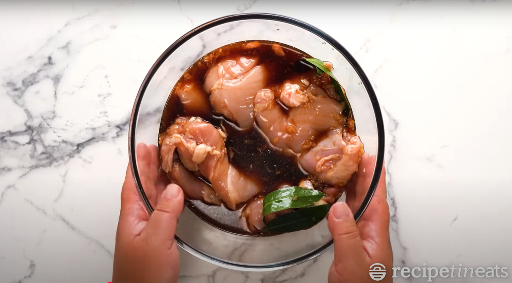
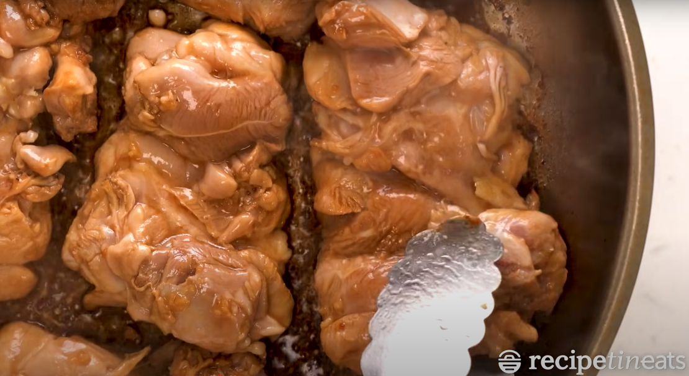
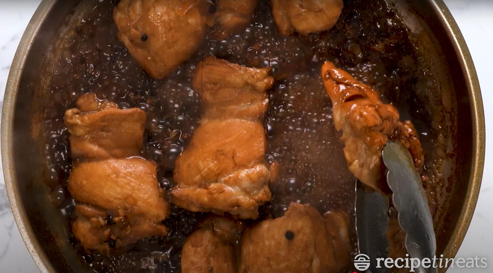

Chicken Adobo
The quintessential Filipino dish
by Carl & Nel
Introduction
Chicken Adobo is one of the most beloved and iconic dishes in Filipino cuisine. Known for its rich, savory, and slightly tangy flavor, this dish is made by simmering chicken in a flavorful mixture of soy sauce, vinegar, garlic, bay leaves, and black peppercorns. The result is a tender, well-seasoned dish with a perfect balance of salty, sour, and umami flavors. Its simplicity, versatility, and delicious taste have made it a staple in Filipino households and a favorite among food lovers worldwide.
In this tutorial, we will guide you step by step on how to prepare an authentic Chicken Adobo that’s both easy to cook and packed with flavor. Whether you're new to Filipino cooking or simply looking to perfect your adobo recipe, this guide will help you achieve that rich, mouthwatering taste. Get ready to enjoy a hearty, comforting dish that pairs perfectly with a warm plate of rice!
SERVES
4-6 People
PREP
5 minutes
COOK
42 minutes
Ingredients
- 1 kg chicken (cut into serving pieces)
- 1/2 cup soy sauce
- 1/2 cup vinegar
- 4 garlic cloves (crushed)
- 3 bay leaves
- 1 tsp black peppercorns
- 1 tbsp cooking oil
- 1 cup water (optional, for more sauce)
Step 1: Marinate the Chicken
In a bowl, combine the chicken pieces, soy sauce, and crushed garlic. Mix well and let it marinate for at least 30 minutes to absorb the flavors.
NextStep 2: Sear the Chicken
Heat vegetable oil in a large skillet over medium-high heat. Cook chicken pieces until golden brown, 2 to 3 minutes per side. Transfer chicken to a plate and set aside.
Previous NextStep 3: Simmer the Adobo
Pour the reserved marinade into the pan. Add the vinegar, bay leaves, black peppercorns, and water (if you prefer more sauce). Bring to a boil, then reduce the heat to low and let it simmer uncovered for 30-40 minutes until the chicken is tender.
Previous NextStep 4: Adjust the Flavor
Taste the sauce and adjust with additional soy sauce or vinegar if needed. Simmer for a few more minutes until the sauce thickens slightly.
Previous Next